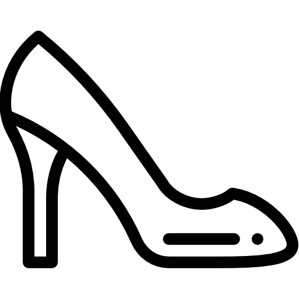

<nav class="navbar navbar-expand-lg navbar-light bg-dark">

  <a>

    

  </a>

  <div class="navbar-nav">

    <a class="nav-item nav-link" style="color: aliceblue;" routerLink = 'home'>Home</a>

    <a class="nav-item nav-link" style="color: aliceblue;" routerLink= 'zapatos'>Zapatos</a>

    <a class="nav-item nav-link" style="color: aliceblue;" routerLink= 'accesorios'>Acessorios</a>

    <a class="nav-item nav-link" style="color: aliceblue;" routerLink= 'contacto'>Contacto</a>

  </div>

</nav>

<!-- Etiqueta que sirve como contenedor para mostrar los componentes ruteados -->
<router-outlet></router-outlet>